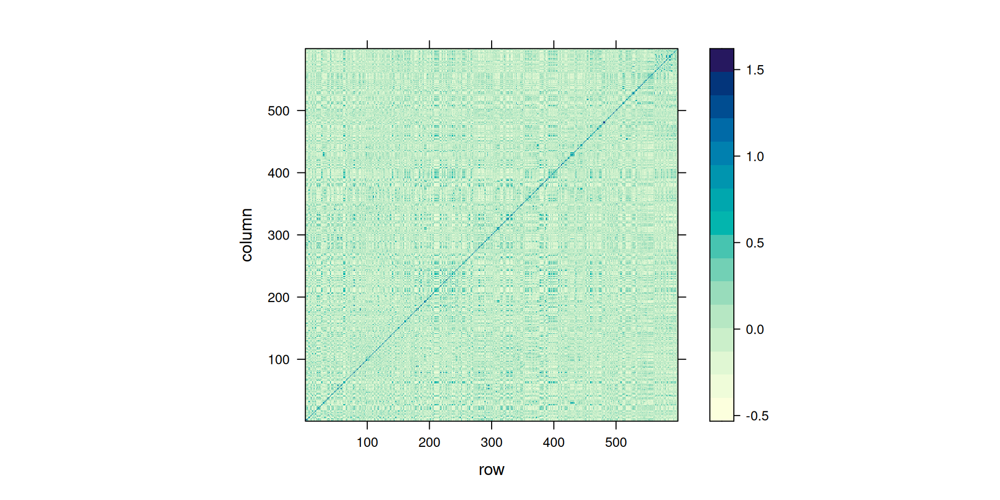
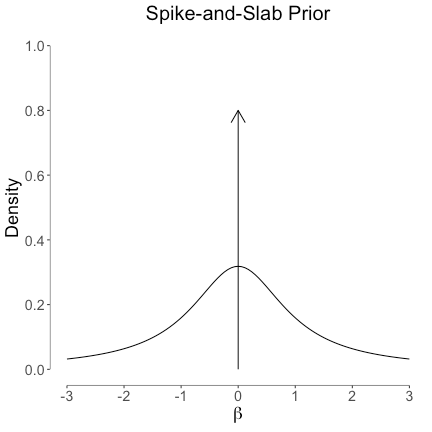

Genomic Prediction
Advanced Statistics Lab
Genomic Prediction
Genomic Prediction entails methods to predict breeding values based on phenotypic and molecular (SNP) data.
\[
\mathbf{\hat{g}} = \mathbf{M}\mathbf{\hat{a}}
\]
where \(\mathbf{M}\) is a matrix of genotype scores in {0,1,2} coding and \(\mathbf{\hat{a}}\) is a vector of average allele effects for those markers.
Estimated Breeding Value
The estimated breeding value (\(\mathbf{\hat{g}}\), EBV) is the sum of all the average allele effects for the marker alleles the individual carries.
Ridge Regression BLUP
The average allele effects can be estimated directly in a mixed effects model, treating the them as random effects:
\[
\mathbf{y} = \mu + \mathbf{M}\mathbf{{a}} + \mathbf{e}
\]
Center Marker Covariates
If the individuals in \(\mathbf{M}\) are not representative of the general population, we have to adjust the breeding values obtained from the marker effects by the population mean.
\[
\mathbf{\hat{g}} = \mathbf{M}\mathbf{\hat{a}} - 2\mathbf{p}\mathbf{\hat{a}}
\]
GBLUP
Instead of doing regression on the marker covariates directly, we can also generate a Gaussian Kernel from those covariates.
\[
\mathbf{G} = \frac{\bar{\mathbf{M}}\bar{\mathbf{M}}'}{tr(\bar{\mathbf{M}}\bar{\mathbf{M}}') / n}
\]
Equivalent Models
The GBLUP model becomes:
\[
\mathbf{y} = \mu + \mathbf{g} + \mathbf{e}
\]
with \(\mathbf{g} \sim MVN(0, \mathbf{G}\sigma_{g}^{2}\)).
Both models, the ridge regression marker model and GBLUP are statistically identical and result in the same EBVs.
Prepare Wheat Data
library(BGLR)
library(rrBLUP)
library(ggplot2)
library(knitr)
library(lattice)
theme_set(theme_minimal(base_size = 16))
# load the "wheat" data set from BGLR
data(wheat)
# extract one phenotype
y = wheat.Y[,1]
# the marker covariates
M = wheat.X
# average allele frequencies ("p")
p = colMeans(M) / 2
Genomic Relationship Matrix
# center our Marker covariates
Mc = sweep(
x = M,
MARGIN = 2,
FUN = "-",
STATS = 2 * p
)
# compute G matrix
MMdash = Mc %*% t(Mc)
G = MMdash / mean(diag(MMdash))
# look at genomic relationships
levelplot(G)

Ridge Regression Marker Model
# design matrix for random effects (marker covariates become design matrix)
Z = Mc
# design matrix for fixed effects (only intercept)
X = array(1, dim = c(length(y), 1))
# fit the model with ML
mod_rr = mixed.solve(
y = y,
X = X,
Z = Z,
method = "ML"
)
Marker Effects And EBV
# extract marker effects
a_rr = mod_rr$u
# predict breeding values from the model
g_rr = as.numeric(Z %*% a_rr)
# extract variance components
var_a_rr = mod_rr$Vu
var_e_rr = mod_rr$Ve
# rescale the marker-effect variance component
var_g_rr = mod_rr$Vu * mean(diag(MMdash))
GBLUP Model
# fit the model with ML
mod_gblup = mixed.solve(
y = y,
K = G,
method = "ML"
)
# extract breeding values
g_gblup = mod_gblup$u
Marker Effects From GBLUP
MMdash_tmp = MMdash
diag(MMdash_tmp) = diag(MMdash_tmp) + 0.00001
a_gblup = as.numeric(t(Mc) %*% solve(MMdash_tmp, g_gblup))
# extract variance components
var_g_gblup = mod_gblup$Vu
var_e_gblup = mod_gblup$Ve
Check Equivalence
# plot breeding values from both models
plot(g_rr, g_gblup)
# plot marker effects from both models
plot(a_rr, a_gblup)
Variance Components
vc = rbind(
data.frame(
model = "Marker Model",
var_g = var_g_rr,
var_e = var_e_rr,
h2 = var_g_rr / (var_g_rr + var_e_rr)
),
data.frame(
model = "GBLUP",
var_g = var_g_gblup,
var_e = var_e_gblup,
h2 = var_g_gblup / (var_g_gblup + var_e_gblup)
)
)
kable(vc, digits = 3)
| Marker Model |
0.605 |
0.539 |
0.529 |
| GBLUP |
0.605 |
0.539 |
0.529 |
Cross Validation
In order to assess the performance of our genomic prediction models, we can run a cross validation scheme, in which we train marker effects with a subset of the data and predict the EBVs of the left out samples based on the training model.
Cross-Validation Helper
cCV <- function(y, folds=5, reps=1, matrix=FALSE, seed=NULL) {
if(!is.vector(y)) stop("y must be a vector")
if(folds < 2) stop("'folds' must be larger than one")
if(reps < 1) reps = 1
reps = as.integer(reps)
folds = as.integer(folds)
isy <- (1:length(y))[!is.na(y)]
n_vec <- rep(NA,folds)
start <- rep(NA,folds)
end <- rep(NA,folds)
n_vec[1:(folds-1)] <- round(length(isy)/folds,digits=0)
n_vec[folds] <- length(isy) - sum(n_vec[1:(folds-1)])
for(j in 1:folds) {
if(j==1) {
start[j] = 1
} else {
start[j] = end[j-1]+1
}
end[j] = sum(n_vec[1:j])
}
count=0
cv_pheno <- list(folds*reps)
if(missing(seed)) seed = as.integer((as.double(Sys.time())*1000+Sys.getpid()) %% 2^31)
set.seed(seed)
for(i in 1:reps) {
ids <- sample(isy,length(isy),replace=F)
for(j in 1:folds) {
count=count+1
y_temp = y
y_temp[ids[start[j]:end[j]]] <- NA
cv_pheno[[count]] <- y_temp
}
}
if(matrix) {
return(matrix(unlist(cv_pheno),nrow=length(y),ncol=length(cv_pheno),byrow=FALSE))
} else {
return(cv_pheno)
}
}
Cross-Validation Fit
cvs = cCV(y, folds = 5, reps = 10)
preds = list()
for(i in 1:length(cvs)) {
this_pred = mixed.solve(y = cvs[[i]], K = G)$u[is.na(cvs[[i]])]
this_y = y[is.na(cvs[[i]])]
preds[[i]] = data.frame(pred = this_pred, y = this_y)
}
cors = unlist(lapply(preds, function(x) cor(x$pred, x$y)))
Bayesian Alphabet
A linear mixed model with a series of independent random effects has the following form:
\[
\mathbf{y} = \mathbf{X\boldsymbol{\beta}} + \mathbf{Z}_{1}\mathbf{u}_1 + \mathbf{Z}_{2}\mathbf{u}_2 + \mathbf{Z}_{3}\mathbf{u}_3 + \dots + \mathbf{Z}_{k}\mathbf{u}_{k} + \mathbf{e}
\]
Spike-And-Slap
In the Bayesian Alphabet, the prior distributions on the marker effects is altered to generally generate a sparsity pattern on the marker effects, meaning feature selection.
This feature selection is achieved by using spike-and-slap mixture priors.

\(BayesC\pi\) - Threshold Model
\[
\begin{aligned}
\mathbf{y} &\sim \mathbf{B}(1,\mathbf{p})\\
\mathbf{p} &= probit(\mathbf{X}\boldsymbol{\beta} + \mathbf{Zu}) \\
\boldsymbol{\beta} &\sim \mathbf{U}(-Inf,Inf) \\
\mathbf{u} &\sim \pi N(0,{\sigma_u}^2) + (1-\pi)\delta_0 \\
\pi &\sim U(0,1) \\
{\sigma_u}^2 &\sim Gamma(1,0.01)
\end{aligned}
\]